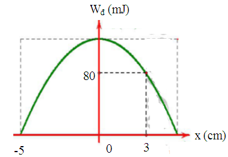

PHẦN IV. Tự luận
Viết lời giải đầy đủ. Bấm “Nộp để AI gợi ý điểm”: AI chấm gợi ý theo biểu điểm, giáo viên sẽ duyệt điểm chính thức.
1
Một vật có khối lượng 300 g dao động điều hòa với phương trình $x=10\cos\left(20t+\frac{\pi}{3}\right)$ cm.
a. Tính cơ năng của vật.
b. Tính tỉ số giữa động năng và thế năng của vật tại thời điểm ban đầu.
a. Tính cơ năng của vật.
b. Tính tỉ số giữa động năng và thế năng của vật tại thời điểm ban đầu.
2
Một vật có khối lượng 100 g dao động điều hòa với phương trình $x = 6\cos(20\pi t + \pi/6)$ cm. Lấy $g = \pi^{2} = 10$ m/s².
a) Tính động năng, thế năng của vật tại li độ $x = 3$ cm.
b) Tính vận tốc trung bình của vật đi từ vị trí cân bằng đến vị trí có li độ $x = 3$ cm.
a) Tính động năng, thế năng của vật tại li độ $x = 3$ cm.
b) Tính vận tốc trung bình của vật đi từ vị trí cân bằng đến vị trí có li độ $x = 3$ cm.
3
Bài 2 (1,5 điểm). Đồ thị hình vẽ mô tả sự thay đổi thế năng theo li độ của quả cầu có khối lượng 0,4 kg trong một con lắc lò xo treo thẳng đứng. Xác định:

a. Cơ năng của con lắc lò xo.
b. Vận tốc cực đại của quả cầu.
c. Thế năng của con lắc lò xo khi quả cầu ở vị trí có tốc độ 20 cm/s.
a. Cơ năng của con lắc lò xo.
b. Vận tốc cực đại của quả cầu.
c. Thế năng của con lắc lò xo khi quả cầu ở vị trí có tốc độ 20 cm/s.
4
Cho đồ thị mô tả sự thay đổi của động năng theo li độ của vật dao động điều hòa có khối lượng 100 g. Hỏi tần số góc, khoảng thời gian giữa hai lần liên tiếp vật có động năng bằng thế năng?
